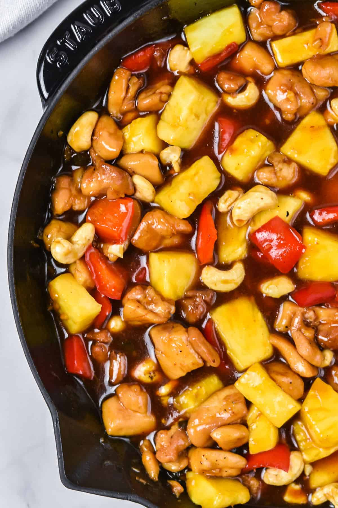

Odin Pineapple Chicken
Below you will find a recipe that I have tweaked to fit my family. Enjoy!

Ingredients
- 4 teaspoon vegetable oil
- 2 pounds boneless skinless chicken thighs cut into 1 inch pieces
- 2 bell peppers seeded, cored, and cut into 1 inch pieces
- 1 onion cut into 1 inch pieces
- 2 teaspoon minced garlic
- 2teaspoon minced ginger
- 1 1/2 cup pineapple juice
- 1/2 cup soy sauce
- 2/3 cup chicken broth
- 2/3 cup hosin sauce
- 1/2 cup brown suger
- 4 teaspoons corn starch
- salt and pepper to taste
Directions
- Prep and cut your chicken and veggies to 1 inch pieces.
- In a large bowl mix together the pineapple juice, soy sauce, chicken broth, brown surger, and hosin sauce set aside.
- In a large skillet over med-high heat add the 4 teaspoons of vegetable oil when hot add your cut veggies. Add a pintch of salt to help break down the veggies.
- When the veggies are mostly cooked add the chicken, minced garlic and minced ginger mix well.
- Once the chicken is mostly cooked add the liquid mix you prepped in the bowl.
- Bring the entire skillet back to a boil until everything is fully cooked. Once everything is fully cooked add the corn starch and mix well.
- Once corn starch is added let boil for 1 minute continuously stirring, then remove from heat
- Once thinckened serve over rice or noodles.